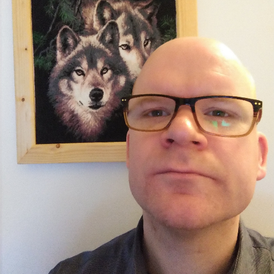

|  |
Louis van BommelIT enthusiast and former Social Worker After many years of working in mental health care in The Netherlands I needed to change direction. I am learning Python now. I already know a lot about computers after teaching Microsoft Windows, Word and Excel as a volunteer. As a self taught repairman for windows pc's I repaired many computers. I like gaming and consume a lot about technology and computersoftware in my spare time. |
| Dates | Work |
|---|---|
| dec. 2020 – feb. 2021 | Apprentice Toolmaking (Leerling gereedschapmakerij), Hermeta Metaalwaren B.V., Asperen |
| may 2013-2020 | Social Pedagogical Worker (Begeleider B), BW Sliedrecht; Yulius |
| 2009 -2012 | Social Worker (Begeleider) Het Opvanghuis; Stichting Corridor Dienstverlening, Rotterdam |
| 2008-2009 | Social Pedagogical Worker (Coach naar Wonen), BW Zwijndrecht; RMPI-De Grote Rivieren |
|
|